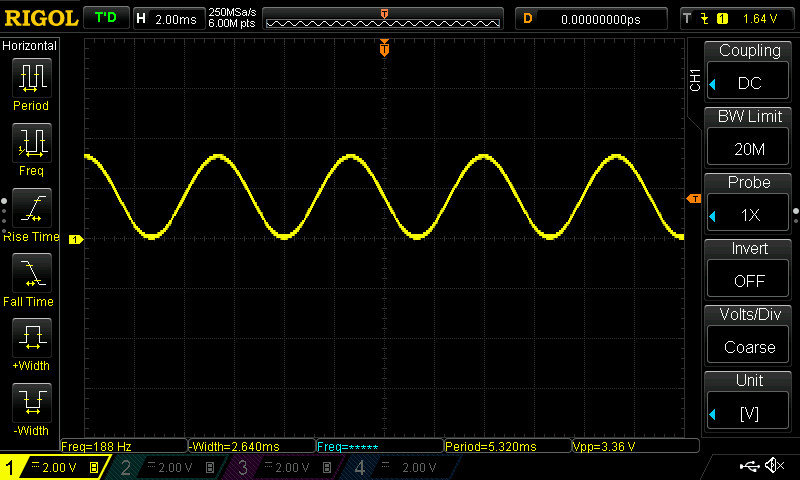

การใช้งานโมดูล MCP4921 SPI DAC (Digital-to-Analog Converter)#
บทความนี้กล่าวถึง ตัวอย่างการใช้งานโมดูล MCP4921 DAC ในเบื้องต้น โดยใช้งานร่วมกับบอร์ดไมโครคอนโทรลเลอร์ และเขียนโปรแกรมด้วย Arduino Sketch เพื่อสร้างสัญญาณแอนะล็อก จำนวน 1 ช่องสัญญาณ
Keywords: MCP4921, Digital-to-Analog Converter (DAC), SPI Bus, Arduino Sketch, Analog Output, Analog Signal Waveform Generation
▷ Microchip MCP492x#
ไอซี MCP4921 / MCP4922 ของบริษัท Microchip เป็นตัวอย่างของไอซีในประเภท DAC (Digital to Analog Converter) และทำหน้าที่แปลงข้อมูลดิจิทัลให้เป็นสัญญาณแอนะล็อก ไอซีดังกล่าวมีเอาต์พุต 1 ช่อง หรือ 2 ช่องสัญญาณตามลำดับ
ไอซี MCP4921 มีขาเพียง 8 ขา ในขณะที่ MCP4922 มี 14 ขา
มีวงจร DAC จำนวน 2 ชุด (DAC_A และ DAC_B) และมีขา /SHDN (Shutdown)
เพื่อเข้าสู่โหมดการประหยัดพลังงานได้
แต่ในบทความนี้จะขอกล่าวถึงเฉพาะไอซี MCP4921 เท่านั้น ซึ่งมีคุณสมบัติโดยสรุป ดังต่อไปนี้
- Single DAC, Rail-to-Rail Output
- DAC Resolution: 12 bits
- Voltage Supply: 2.7V to 5.5V (Single-Supply)
- SPI Interface: Mode (0,0) and (1,1)
- SPI Frequency: 20 MHz (max.)
- External VREF Input Pin
- Settling Time: 4.5 µs
- Selectable Gain (G): 1x or 2x
- No shutdown pin
รูป: บล็อกไดอะแกรม และขาของไอซี
การส่งข้อมูลไปยังไอซี MCP492x จะใช้วิธีเลื่อนบิตเข้าที่ขา
SDI (Serial Data Input) ตามจังหวะของสัญญาณ SCK (Serial Clock)
เมื่อลอจิกของสัญญาณ /CS ได้เปลี่ยนจาก 1 เป็น 0
เมื่อได้เลื่อนบิตคำสั่งและข้อมูลทั้งหมด 16 บิต ไปยังรีจิสเตอร์ภายในได้ครบแล้ว
จะต้องมีการสร้างสัญญาณพัลส์แบบ Low-Active ที่ขา/LDAC ซึ่งจะต้องมีความกว้างอย่างน้อย 100 ns
และเกิดขึ้นหลังจากสัญญาณ /CS ได้เปลี่ยนจาก 0 เป็น 1 แล้วอย่างน้อย 40 ns
ไอซี MCP492x มีขาอินพุต VREF สำหรับการทำงานของวงจร DAC
ภายในแต่ละชุด และ VREF จะต้องมีระดับแรงดันคงที่และไม่เกิน VDD
แรงดันอ้างอิง VREF สามารถเลือกได้ว่า จะให้ผ่านหรือไม่ผ่านวงจรบัฟเฟอร์
(Buffer) ที่อยู่ภายในไอซี โดยทั่วไปแล้ว ก็ใช้ VREF เท่ากับแรงดันไฟเลี้ยง VDD
วงจร DAC แต่ละชุดภายในไอซี มีวงจรขยายสัญญาณ
(OpAmp) ที่สามารถโปรแกรมเลือกอัตราขยายได้
(Programmable Gain) ระหว่าง 1x กับ 2x
รูป: การส่งข้อมูลด้วยบัส SPI ไปยังไอซี MCP492x
รูป: รีจิสเตอร์ Write Command Register และความหมายของบิตที่เกี่ยวของ
▷ ตัวอย่างการเขียนโค้ด Arduino สำหรับบอร์ด Arduino Uno R4#
โค้ดตัวอย่างต่อไปนี้ จะใช้กับบอร์ด Arduino Uno R4 Wi-Fi ซึ่งทำงานด้วยแรงดันไฟเลี้ยง +5V
และเริ่มต้นการทำงานด้วยฟังก์ชัน setup() มีการเปิดใช้งานวงจรตัวนับ (Hardware Timer)
ของไมโครคอนโทรลเลอร์ RA4M1 (32-bit Arm Cortex-M4F, 48MHz)
โดยใช้ฟังก์ชันของคลาส FspTimer ซึ่งเป็นส่วนหนึ่งของ
"Arduino Core for Renesas"
และมีการเปิดใช้งานอินเทอร์รัพท์ของวงจรตัวนับ ด้วยอัตราคงที่ เช่น 50kHz
วงจรตัวนับภายใน RA4M1 มี 2 ประเภท ได้แก่
- AGT (Asynchronous General Purpose Timers): 16-bit
- GPT (General Purpose PWM Timers): 16-bit / 32-bit
ในโค้ดตัวอย่างนี้ได้เลือกใช้ GPT Timer
ทุกครั้งที่มีการเกิดอินเทอร์รัพท์จากวงจรตัวนับ จะมีการเรียกใช้ฟังก์ชัน timerCallback(...) และเรียกฟังก์ชัน
writeDAC(...) เพื่อส่งบิตคำสั่ง 4 บิต และข้อมูลขนาด 12 บิต รวมเป็น 16 บิต
ไปยังไอซี MCP4921 โดยใช้บัส SPI ในโหมด (0,0) และได้ตั้งค่าความถี่ไว้ 5MHz โดยประมาณ
แรงดันไฟเลี้ยงและขาสัญญาณที่ใช้ในการสื่อสารข้อมูลกับไอซี MCP4921 (ใช้แรงดันไฟเลี้ยง +5V) มีดังนี้
SCK:D13SDI:D11/CS:D10/LDAC:D9VDD:5VVREFA:5VAVSS:GND
ข้อมูลเป็นแบบ 8-bit Unsigned และอ่านค่าตามลำดับจากอาร์เรย์ของค่าคงที่ SAMPLES_TABLE[...]
ที่ได้จากการชักตัวอย่าง 256 ตัวเลข (NUM_SAMPLES) ของฟังก์ชันรูปคลื่นไซน์
ในช่วงหนึ่งคาบ และมีค่าอยู่ในช่วง 0..255
การอัปเดตค่าสำหรับ DAC จะเกิดขึ้นด้วยอัตรา 50kHz หรือ 50k Samples/sec ดังนั้นจะได้สัญญาณรูปไซน์ที่มีความถี่เท่ากับ 50kHz / 256 = 195.3Hz
// Arduino Uno R4 WiFi + MCP4921
// Date: 2024-11-14
#include <SPI.h>
#include <FspTimer.h> // Use the FspTimer class
const int CS_PIN = 10; // Chip select pin (active-low)
const int LDAC_PIN = 9; // Load DAC output (active-wlow)
const int NUM_SAMPLES = (1 << 8);
uint16_t SAMPLES_TABLE[ NUM_SAMPLES ];
uint32_t sample_index = 0;
FspTimer timer;
void writeDAC(uint16_t value) {
// MCP4921 16-bit write command register
// Bit 15: #A/B = 0 for DAC A selection
// Bit 14: BUF = 0 for Unbuffered VREF
// Bit 13: #GA = 1 for 1x Gain
// Bit 12: #SHDN = 1 for Enabled (Not Shutdown)
// Bits 14-12 : Config bits
// Bits 11-0 : 12-bit data value
uint16_t cmd_data = (0b0011 << 12) | (value & 0x0FFF);
// Begin SPI transaction with specified settings
SPI.beginTransaction(SPISettings(5000000, MSBFIRST, SPI_MODE0));
digitalWrite( CS_PIN, LOW ); // Select the device
SPI.transfer16( cmd_data ); // Write command and data
digitalWrite( CS_PIN, HIGH ); // Deselect the device
SPI.endTransaction(); // End SPI transaction
digitalWrite( LDAC_PIN, LOW ); // Latch DAC output register
digitalWrite( LDAC_PIN, HIGH );
}
void timerCallback(timer_callback_args_t __attribute((unused)) *p_args) {
writeDAC( SAMPLES_TABLE[sample_index++] ); // Update DAC output
if (sample_index >= NUM_SAMPLES) sample_index = 0;
}
void timerInit() {
timer_mode_t timer_mode = TIMER_MODE_PERIODIC;
uint8_t timer_type = GPT_TIMER;
float timer_freq_hz = 50e3f; // Timer tick rate = 50kHz
int timer_index = FspTimer::get_available_timer(timer_type);
if (timer_index < 0) {
timer_index = FspTimer::get_available_timer(timer_type, true);
}
if (timer_index >= 0) {
timer.begin(timer_mode, timer_type, timer_index,
timer_freq_hz, 0.0, timerCallback, nullptr);
timer.setup_overflow_irq();
timer.open();
timer.start();
}
}
void setup() {
pinMode( CS_PIN, OUTPUT );
digitalWrite( CS_PIN, HIGH );
pinMode( LDAC_PIN, OUTPUT );
digitalWrite( LDAC_PIN, HIGH );
SPI.begin();
const uint32_t A = (1 << 11) - 1; // Scale
for (int i = 0; i < NUM_SAMPLES; i++) {
SAMPLES_TABLE[i] = (uint16_t)(A*(1+sin(2*PI*i/NUM_SAMPLES)));
}
timerInit();
}
void loop() {
}
รูป: ตัวอย่างการต่อวงจรทดลองบนเบรดบอร์ด
รูป: สัญญาณเอาต์พุต (DC Coupling) รูปคลื่นไซน์ที่มีความถี่ 195Hz
รูป: สัญญาณเอาต์พุต (AC Coupling)
รูป: ตัวอย่างการวัดสัญญาณ CH1: /CS และ CH2: SCK
จากรูปคลื่นสัญญาณที่วัดได้ จะเห็นได้ว่า สัญญาณ SCK มีความถี่ 5MHz
และช่วงที่เป็นลอจิก 0 สำหรับ /CS มีระยะเวลาประมาณ 7.6us
และมีอัตราการอัปเดตเอาต์พุตเท่ากับ 50kHz
▷ ตัวอย่างการเขียนโค้ด Arduino สำหรับบอร์ด ESP32#
ในเชิงเปรียบเทียบโค้ดตัวอย่างถัดไป แตกต่างจากโค้ดที่แล้วในบางส่วน เช่น วงจรตัวนับ และวงจรสำหรับบัส SPI
และจะใช้สำหรับบอร์ดไมโครคอนโทรลเลอร์ ESP32
ในตัวอย่างนี้ ได้เลือกใช้วงจร VSPI สำหรับเชื่อมต่อกับบัส SPI ดังนั้นจึงใช้ขา GPIO ดังนี้
MOSI=23,MISO=19,SCLK=18,CS=5
// WeMos Lolin32 Lite + MCP4921
// Date: 2024-11-14
#include <SPI.h>
#define TIMER_FREQ_HZ (1e6) // 1MHz HW timer
#define FS (50e3) // 50kHz output update rate
const int CS_PIN = 5; // Chip select pin (active-low)
const int LDAC_PIN = 2; // Load DAC output (active-low)
const int NUM_SAMPLES = (1 << 8);
uint16_t SAMPLES_TABLE[ NUM_SAMPLES ];
uint32_t sample_index = 0;
hw_timer_t *timer = NULL; // Timer handle
void writeDAC(uint16_t value) {
// MCP4921 16-bit write command register
// Bit 15: #A/B = 0 for DAC A selection
// Bit 14: BUF = 0 for Unbuffered VREF
// Bit 13: #GA = 1 for 1x Gain
// Bit 12: #SHDN = 1 for Enabled (Not Shutdown)
// Bits 14-12 : Config bits
// Bits 11-0 : 12-bit data value
uint16_t cmd_data = (0b0011 << 12) | (value & 0x0FFF);
// Begin SPI transaction with specified settings
SPI.beginTransaction( SPISettings(5000000, MSBFIRST, SPI_MODE0));
digitalWrite( CS_PIN, LOW ); // Select the device
SPI.transfer16( cmd_data ); // Write command and data
digitalWrite( CS_PIN, HIGH ); // Deselect the device
SPI.endTransaction(); // End SPI transaction
digitalWrite( LDAC_PIN, LOW ); // Latch DAC output register
digitalWrite( LDAC_PIN, HIGH );
}
// Timer interrupt callback function
void IRAM_ATTR timerCallback() {
writeDAC( SAMPLES_TABLE[sample_index++] ); // Update DAC output
if (sample_index >= NUM_SAMPLES) sample_index = 0;
}
// Initialize the timer for periodic sampling
void timerInit() {
timer = timerBegin( TIMER_FREQ_HZ );
if (timer == NULL){
Serial.println("Timer init failed!!");
}
timerAlarm( timer, (uint32_t)(TIMER_FREQ_HZ/FS) /*period (ticks)*/,
true /*autoreload*/, 0 /*autoreload count*/ );
timerAttachInterrupt( timer, &timerCallback );
timerStart( timer );
}
void setup() {
pinMode( CS_PIN, OUTPUT );
digitalWrite( CS_PIN, HIGH );
pinMode( LDAC_PIN, OUTPUT );
digitalWrite( LDAC_PIN, HIGH );
// Uses default VSPI pins: MOSI=23, MISO=19, SCLK=18, and CS=5
SPI.begin(); // Initialize VSPI
const uint32_t A = (1 << 11) - 1; // Scale
for (int i = 0; i < NUM_SAMPLES; i++) {
SAMPLES_TABLE[i] = (uint16_t)(A*(1+sin(2*PI*i/NUM_SAMPLES)));
}
timerInit();
}
void loop() {
}
รูป: การต่อวงจรทดลองโดยใช้บอร์ด WeMos Lolin32 Lite ร่วมกับไอซี MCP4921

รูป: สัญญาณเอาต์พุตรูปคลื่นไซน์ (วัดความถี่ได้ 188Hz)
อัตราการอัปเดตสำหรับ DAC วัดได้ 48.1kHz ซึ่งต่ำกว่าค่าที่ได้กำหนดไว้ในโค้ด (50kHz) ดังนั้นความถี่ของสัญญาณเอาต์พุตรูปคลื่นไซน์ที่เป็นจริง คำนวณได้จาก 48.1kHz/ 256 = 187.9Hz และวัดได้ประมาณ 188Hz
รูป: การวัดสัญญาณ CH1: /CS และ CH2: SCK
สัญญาณ /CS มีช่วงที่เป็นลอจิก 0 ซึ่งเป็นช่วงที่มีการสื่อสารข้อมูลผ่านบัส SPI
มีระยะเวลาประมาณ 4.89us
▷ กล่าวสรุป#
บทความนี้นำเสนอตัวอย่างการเขียนโค้ด Arduino สำหรับบอร์ด Arduino Uno R4 และ ESP32 และการต่อวงจรใช้งานร่วมกับไอซี MCP4921 SPI DAC เพื่อสร้างสัญญาณแอนะล็อก (รูปคลื่นไซน์) เป็นเอาต์พุตหนึ่งช่องสัญญาณ
This work is licensed under a Creative Commons Attribution-ShareAlike 4.0 International License.
Created: 2024-11-13 | Last Updated: 2024-11-14